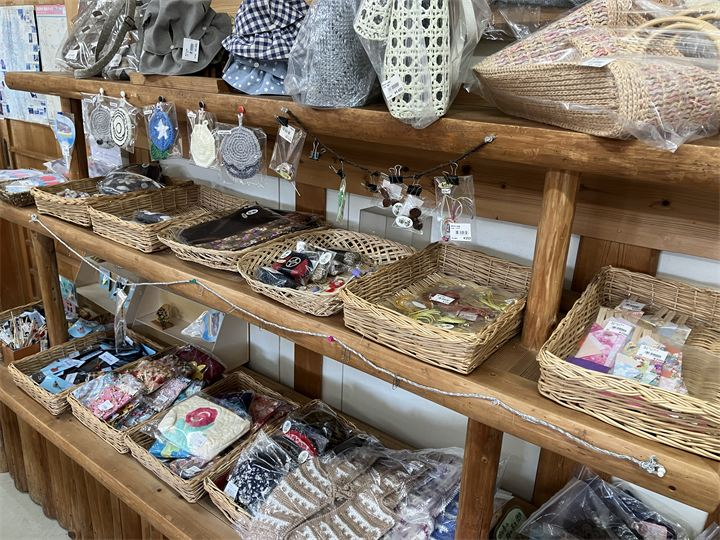
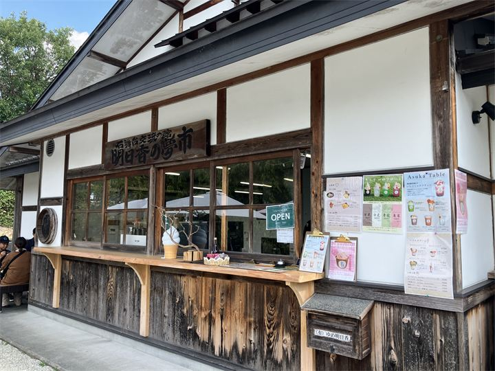

明日香ならではのお土産
明日香村の特産品や地域の人が手作りした商品もあるので、お気に入りの一点ものに出会えるかも！

明日香の夢市は、明日香村島庄にあるお土産販売店です。 石舞台古墳の近くにあり、明日香村の特産品や地域の商品を購入できます。 観光の途中に立ち寄りやすく、旅の思い出になるお土産探しにおすすめのスポットです。
| 営業時間 |
10:00〜16:00 （土日祝は17:00まで） |
|---|---|
| 定休日 | 年末年始 |
| 所要時間 | 15〜30分 |
| 駐車場 | あり（無料） |
| アクセス |
近鉄飛鳥駅から徒歩約50分 奈良交通バス「石舞台」バス停下車すぐ |
| 地図 | 地図はこちら |

明日香村の特産品や地域の人が手作りした商品もあるので、お気に入りの一点ものに出会えるかも！

石舞台古墳の近くにあり、観光途中の休憩や買い物に便利です。
明日香の夢市は、明日香村の魅力を発信する販売施設として、地域の商品や特産品を取り扱っています。 石舞台古墳周辺の観光エリアに位置し、訪れる人に明日香の味や文化を届けています。